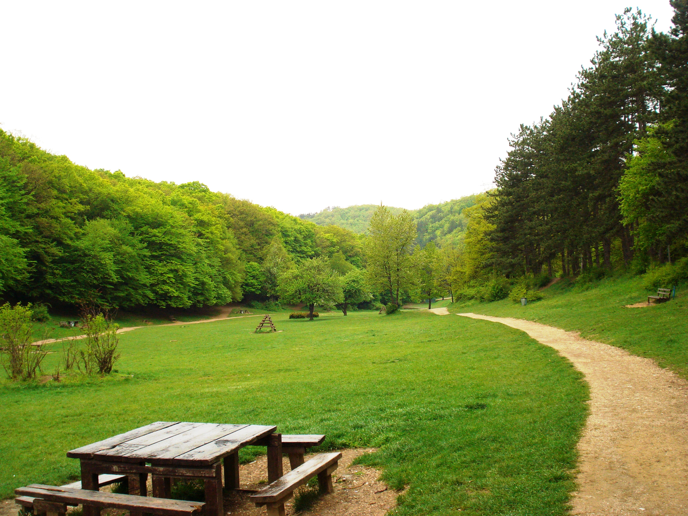

The largest city and capital of Kosovo is Prishtina (since 1947) with a total population of more than 500 thousand inhabitants. Prishtina is the cultural, economic and administrative center of the country with its history. Archaeological discoveries date back to the Neolithic years. The southern district of Prishtina, Ulpiana is believed to have been the center of the Illyrian province of Dardania, and one of the most famous cities in the early second century BC.
Until World War II, Pristina simply emerged as an oriental city before becoming the capital. Old, narrow cobblestone streets with houses made of clay bricks have been replaced by wide streets, with high-rise buildings and new modern complexes. Prishtina is the center of higher education for all of Kosovo and the site of the Academy of Arts and Sciences, a place where the intellectual brain of the country is gathered. As you walk the city streets in the summer, you will find yourself among the many bars, shops and various meeting places, where you can talk to the locals and make fun of them. Finally, the city of Prishtina is also known for its delicious food, hospitality, nightlife and lifestyle. .
Germia Park is a large beautiful park located in the east part of the city of Prishtina. Its endless forests, well maintained paths, fresh air, and the spitting distance from the city make it an attractive place to spend a nice quiet afternoon or weekend. In addition, a large swimming pool is situated in the entrance of the park. Skiing is another activity that can be performed there during winter, though there are no ski lifts or other facilities.
-built in 1461 it is located in the old center of Prishtina
-One of the beautiful orthodox complexes, part of the UNESCO world heritage.
-It is believed that it was created at the beginning of the second century BC, and flourished during the third and fourth centuries.